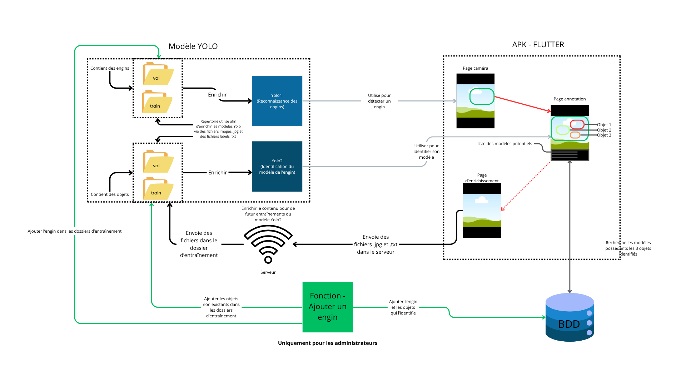

Milidex - Projet de stage (application flutter)

Contexte
Milidex est une application mobile réalisé durant ma deuxième année de BTS SIO. Ce travail a été mené en stage pendant 7 semaines avec l'aide de mon maître de stage.
Technologies du projet
- Python (via Anaconda3) pour préparer les données et gérer l'entraînement des modèles.
- LabelImg pour annoter les images et créer les fichiers de labels utilisés par YOLO.
- YOLOv8 pour la détection et la reconnaissance d'engins sur images et vidéos.
- Flutter (Dart) pour développer l'application mobile.
- Raspberry Pi avec Apache2 pour héberger le serveur web du projet.
Fonctionnalités de l'application Flutter
- Repérer les engins militaires sur les vidéos en temps réel.
- Capturer l'objet identifier et faire des annotations.
- Analyser l'image capturée pour reconnaître le modèle de l'engin.
- Envoyer les images annotées vers le serveur ou les télécharger localement si le serveur n'est pas accessible.
- Afficher les résultats de la reconnaissance d'objets.
- Créer une correction format YOLO afin de l'envoyer au serveur et enrichir les données.
Résultats et apprentissages
Ce projet m'a permis de renforcer mes compétences en Flutter et d'acquérir une expérience
dans la création de modèles d'IA.
Annotation de données, entraînement et amélioration de modèles YOLO, puis
intégration dans une application Flutter avec gestion de l'envoi serveur et
du mode hors ligne.